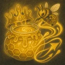
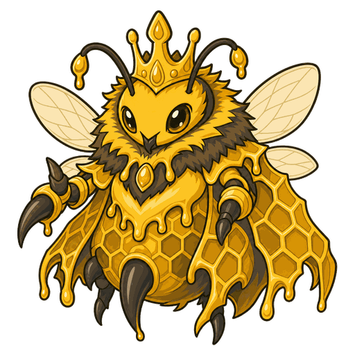
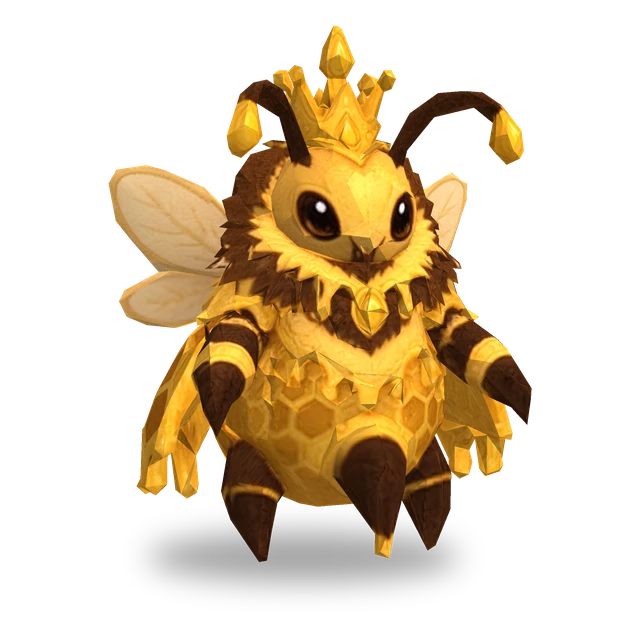
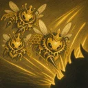

Sữa Ong Chúa
Hồi máu cho tất cả ong thợ của bản thân bằng 10% Máu tối đa của chúng và tăng 200% Tốc độ đánh của chúng trong 3 giây. Sau đó, nếu số ong thợ ít hơn số tối đa, triệu hồi 1 con ong thợ vào ô trống xung quanh.

3D
| Lv. | Máu | Sức tấn công | Sức mạnh phép |
|---|---|---|---|
| 1 | 255 | 20 | 20 |
| 2 | 293 | 23 | 23 |
| 3 | 337 | 26 | 26 |
| 4 | 388 | 30 | 30 |
| 5 | 446 | 35 | 35 |
| 6 | 513 | 40 | 40 |
| 7 | 590 | 46 | 46 |
| 8 | 678 | 53 | 53 |
| 9 | 780 | 61 | 61 |
| 10 | 897 | 70 | 70 |
| 11 | 1032 | 81 | 81 |
| Lv. | Máu ong thợ | Sức tấn công ong thợ |
|---|---|---|
| 1 | 60 | 40 |
| 2 | 69 | 46 |
| 3 | 79 | 53 |
| 4 | 91 | 61 |
| 5 | 105 | 70 |
| 6 | 121 | 80 |
| 7 | 139 | 93 |
| 8 | 160 | 106 |
| 9 | 184 | 122 |
| 10 | 211 | 141 |
| 11 | 243 | 162 |
Máu, Sức tấn công và Sức mạnh phép tăng 15% mỗi cấp (tối đa Lv.11).
No.023
Gọi ong thợ nhỏ đến cùng chiến đấu; dùng sữa ong chúa để hồi máu và tăng Tốc độ đánh cho ong thợ.

Hồi máu cho tất cả ong thợ của bản thân bằng 10% Máu tối đa của chúng và tăng 200% Tốc độ đánh của chúng trong 3 giây. Sau đó, nếu số ong thợ ít hơn số tối đa, triệu hồi 1 con ong thợ vào ô trống xung quanh.

Chỉ huy tối đa 3 con ong thợ. Chỉ số của ong thợ tăng theo cấp của Nữ Hoàng Mật, và các hiệu ứng lên đồng minh có giới hạn số mục tiêu sẽ không chọn ong thợ. Mỗi giây, ong thợ nhận sát thương phép bằng 4% Máu tối đa của chính nó. Khi Nữ Hoàng Mật bị hạ gục, ong thợ trở nên cuồng nộ: sát thương gây ra và sát thương phải nhận đều tăng lên gấp 2 lần.